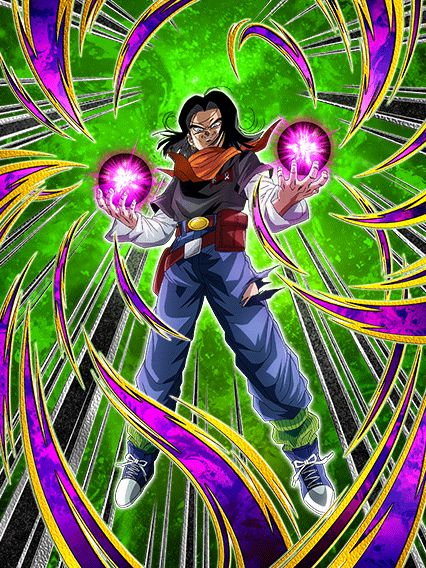

Chegamos em dezembro e o Jiren foi enfim encontrado.
Obrigado, Omatsu
Chegamos em dezembro e o Jiren foi enfim encontrado.
Obrigado, Omatsu
")
Tecnicamente o primeiro personagem a ganhar um novo TUR depois de um LR DFE.
Esse cara tem Defesa Ativa infinita e ganha até 150% de DEF multiplicativa dependendo do quão alto estiver seu HP
Caso a luta passe do turno 7, ele perde ATK e DEF e chance de crítico, mas ganha 50% de chance de desvio em troca, o que é absurdo
E se tudo não bastasse, ele ainda dá 50% de ATK e DEF pra Extreme Class se tiver um aliado Power Absorption ou Transformation Boost no turno
E sim, ele tem um domínio.

O domínio dura 3 turnos, mas nesse tempo esse cara tem 70% de redução de dano e 40% de DEF multiplicativa por orb pega, e ele pelo menos muda orbs AGL pra TEQ
O grande rolê desse cara é que ele stacka 100% de ATK no Super Attack e isso é transferido pro Buuhan quando o domínio acabar
E adivinha? Pegando 6 orbs ele lança 2 Supers adicionais garantidos
Um Dokkan Fest simplesmente ridículo de absurdo.

Um suporte aceitável.
Esse cara precisa basicamente de um time Majin Buu Saga e Super Class pra ter a passiva completa, mas pelo menos com tudo ativado ele tem Defesa Ativa, um adicional com 70% de chance de ser SA e 200% de ATK e DEF
Ele dá 40% de ATK e DEF pra aliados Potara e Majin Buu Saga, e +20% se também forem Realm of Gods
Bem simplão.

Esse é um SEZA bem mais defensivo, já que o Gohan ganha Defesa Ativa e 30% de chance de desvio nos slots 2 ou 3, e builda um máximo de 120% de DEF e 40% de chance de desvio com cada SA feito
Se todos aliados no time forem Super Class, ele lança um SA adicional e ainda dá 30% de ATK e DEF pra Super Class também, que pode aumentar pra 58% se tiver um inimigo Extreme Class
Vale lembrar que ele stacka 50% de ATK no SA, então eventualmente o dano dele fica bom também.

Eu vou ser bem direto, esse cara tem 60% de redução de dano no slot 1, mas ele não tem defesa, então ele não consegue tankar
O dano dele é baixo, e por ele ser um LR da Ultimate Clash, você só vai conseguir deixar ele rainbow daqui 1 ano quando ele tiver virado um fóssil
Ainda assim.. pq a animação da arte dele é tão boa?
Defina "aura".
")
Eles finalmente ganharam EZA.
Esse cara tem 50% de chance de desvio que aumenta pra 70% se ele estiver acima de 50% de HP, o que é ótimo
Além disso, ele muda orbs pra rainbow se tiver um aliado Majin Buu Saga e ganha +120% de ATK e DEF pegando 3 orbs
As condições de transformação dele e do Vegeta foram melhoradas, então você deve se transformar bem rápido
")
O melhor amigo do Goku SSJ3 AGL.
Esse cara manteve as mesmas condições do desvio da forma base, mas agora o desvio é aumentado pra 80%
Ele ainda mantém o orb change e lança um SA adicional e dá crítico garantido se pegar 6 orbs, o que não é muito difícil
Ele tecnicamente não tem outra mecânica defensiva que não seja o desvio, então é bom tomar cuidado.

Vou repetir: 2024 é o ano do Vegeta.
Na forma base esse cara é um pouquinho perigoso, já que ele tem 30% de redução de dano que aumenta pra 50% se ele pegar uma rainbow orb
Apesar disso, ele muda orbs igualzinho o Goku e ainda teve a condição de transformação melhorada também

Sim, ele é melhor que o Goku.
Ao contrário do Goku SSJ3, esse cara tem 33% de redução de dano que aumenta pra 66% se ele pegar uma rainbow orb e ganha Defesa Ativa se ele pegar 6 orbs
Em geral, o dano dele é muito melhor e ele tem uma capacidade de tankar muito melhor do que apenas ter desvio
Belo card, belo EZA, muito merecido.

SÓ LEVOU 6 MESES 😭😭😭 BEM VINDO JIREN
O Jiren é extremamente simples, tendo só um monte de ATK e DEF e 50% de redução de dano q aumenta pra 61% se ele estiver nos slots 2 ou 3
No turno seguinte você já pode ir pra standby dele, e é bom que você vá mesmo

O Jiren tem 50% de redução de dano e cada orb pega aumenta a redução em 11%, chegando facilmente à 100% com só 5 orbs, o que deixa ele invencível contra tudo
Além disso, ele ainda dá 70% de ATK pra todos aliados por 2 turnos, o tornando um tank suporte perfeito
Apesar de ele não poder atacar, isso é bem compensado quando a standby acaba..
Será que 511% de ATK e DEF e essencialmente crítico garantido tá bão?
O Jiren não só tem 60% de redução de dano pro resto da luta, como também stacka 50% de ATK RECEBENDO SUPER ATTACKS DO INIMIGO
O cara simplesmente quer levar supers de propósito, muito bom
E com a chegada dele, acaba-se enfim a Sync do Global e JP (que foi horrível 💀)

O Gotenks é um personagem super simples, precisando chegar a 24 de Ki pra ter crítico garantido e diversos buffs de dano e defesa multiplicativa, além de ter bastante redução de dano
Além disso, ele conta com incríveis 50% de chance de ter 777% de DEF ao levar um SA, basicamente tornando ele imortal pro resto do turno caso seja ativada
Ele ainda tem um counter ridículo de forte contra Supers de Ki, que tem o maior multiplicador de dano do jogo inteiro
Com todo esse dano e defesa, juntamente com orb change pra rainbow, SA adicional garantido.. esse cara é literalmente o filho do Super Gogeta TEQ.
Alguém com saudade do World Tournament? Pq eu com certeza não estava.
A notícia boa é que não tem mais um "World Tournament de final de ano" pro Global por causa da Sync, já é uma coisa boa

Esse cara tem 50% de chance de desvio, que aumenta em 5% por aliado DB Saga no turno, e depois aumenta em +5% quando ele desviar 5 vezes, e depois aumenta em +8% quando ele desviar 8 vezes
Se nesse tempo você não virar purê, ele consegue manter uma boa chance de desvio pelo menos
Essa 18 tem stats brutos absurdamente altos e ainda tem 50% de chance de desvio, o que é bem útil
Cada SA dela dá 50% de ATK e DEF por 3 turnos, e ela pode mandar até 5 num turno nas melhores condições
No auge do auge, ela é realmente boa, mas é complicado chegar nesse auge né
Outra personagem de desvio muito competente.
A Pan tem 70% de chance de desvio que só abaixa pra 50% se ela levar um golpe no turno
Além do desvio, ela tem um dano maneiro no SA e tem um Super adicional garantido nos slots 2 ou 3
Ela não tem muitos times, mas é usável pelo menos.

O 17 é outro personagem de desvio, tendo 50% de chance de desvio e +17% pós SA
Tirando isso, ele dá 30% de ATK e 20% de DEF pra Androids e Artificial Life Forms, e tem mais dano, defesa e um adicional com 50% de chance de ser SA se tiver algum aliado nessas categorias
E ainda deram uma arte e animações bem decentes pra esse cara.
Pelo menos esses EZAs foram bem melhores q a maioria que tivemos esse ano, pq slk, tava difícil
Você chegou ao fim dessa página!
Bom.. por enquanto né, a celebração tá acontecendo agora e tals..
Obrigado por ler tudo, e fica a vontade pra ver outras